Cryogenic Sample Holder
A copper sample mount that holds a sample and its wiring in the optical path of a Montana Instruments cryostat during optical absorption measurements.
Problem Definition
Optical absorption measurements in the lab's Montana Instruments cryostat need the sample to sit in the optical path, with its wiring held clear, while it cools to 20 K. I designed a dedicated copper mount that holds the sample and routes its wires inside the cryostat, keeping the optical path open.

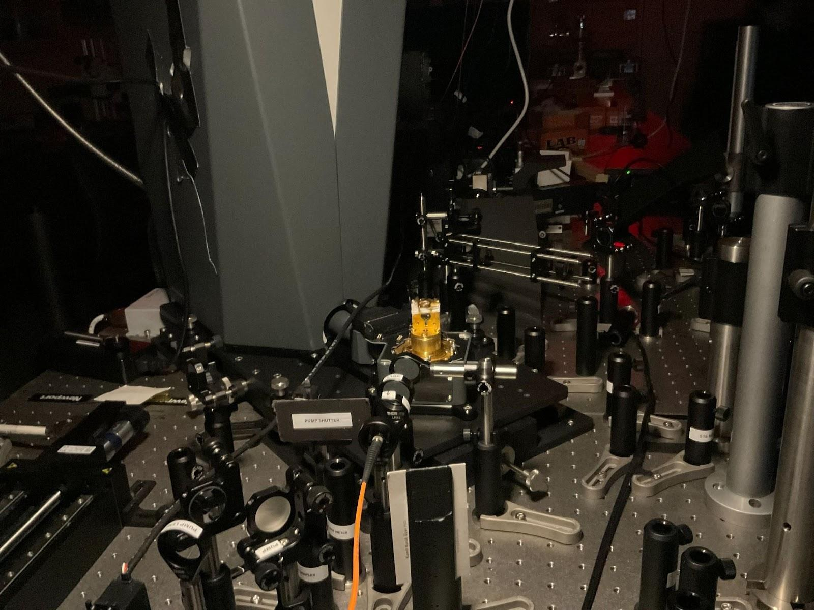
01Iterative CAD Design
I modeled the mount in Autodesk Fusion 360 and Creo. The final assembly (drawing EGR-50005-000) has 15 items: a base, a dovetail base, a slider subassembly, a legs-and-glass subassembly, a wire holder, and ten modeled wires (WIRE_1 to WIRE_5M) used to lay out the wire routing.

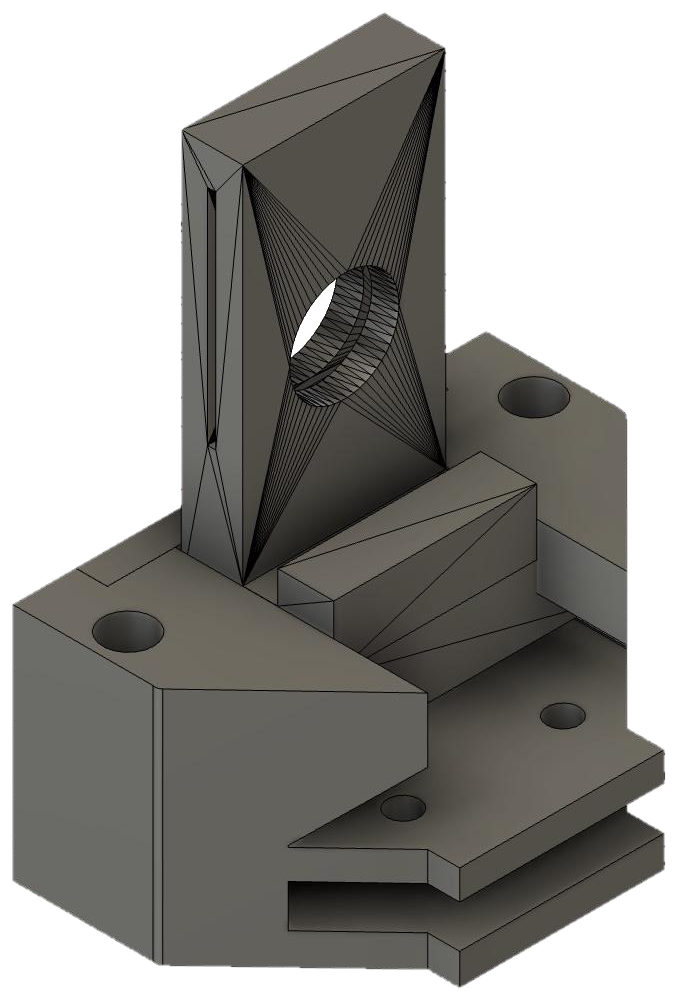

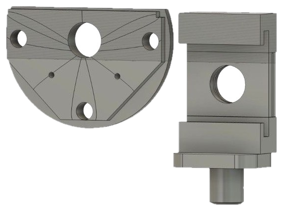

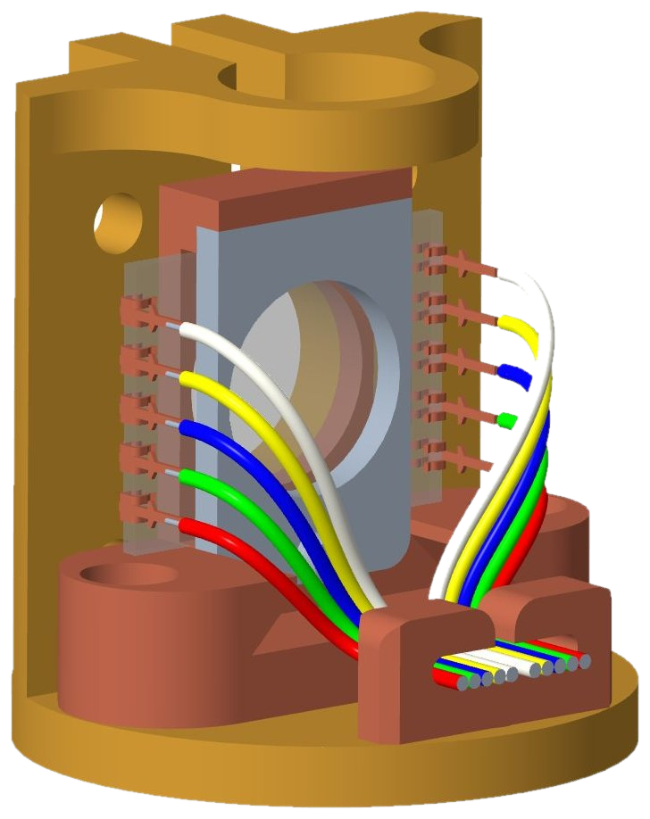

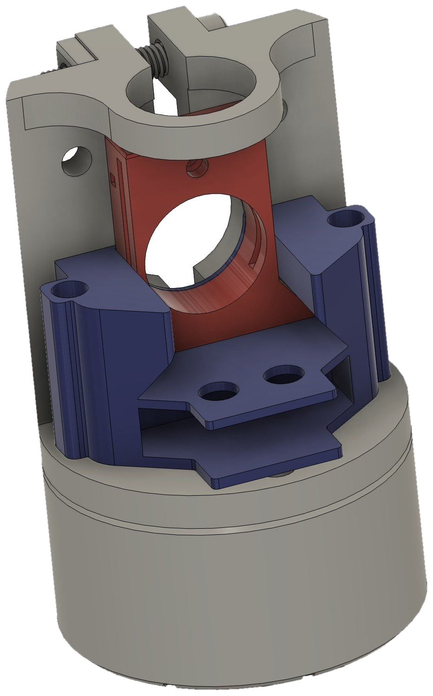
023D Printed Prototypes
I printed the parts before making them in copper, to check their fit on the cryostat stage and with the wiring.


03Machined Final Design
The final parts were made in copper using a Tormach PCNC 440 CNC mill and a Wazer waterjet.
Fit issue found at installation: the dovetail base interfered with the cryostat casing. I widened one mounting hole on a drill press, which restored clearance while keeping screw support.


Results & Impact
- Noise: absorption spectra of (R-MBA)2PbI4 taken with the holder showed about 79% less noise at 20 K and about 31% less at 300 K than spectra taken without it.
- Peak position: the excitonic absorption peak shifted by less than 5 nm with the holder, so the holder did not noticeably change the measured spectrum.
- Status: installed and used for measurements in the lab's cryostat.

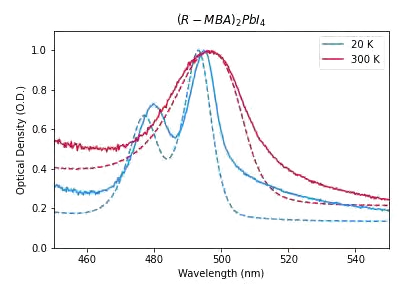
Drawings
Assembly drawing EGR-50005-000 and part drawings for the four machined parts. Click any sheet to enlarge.

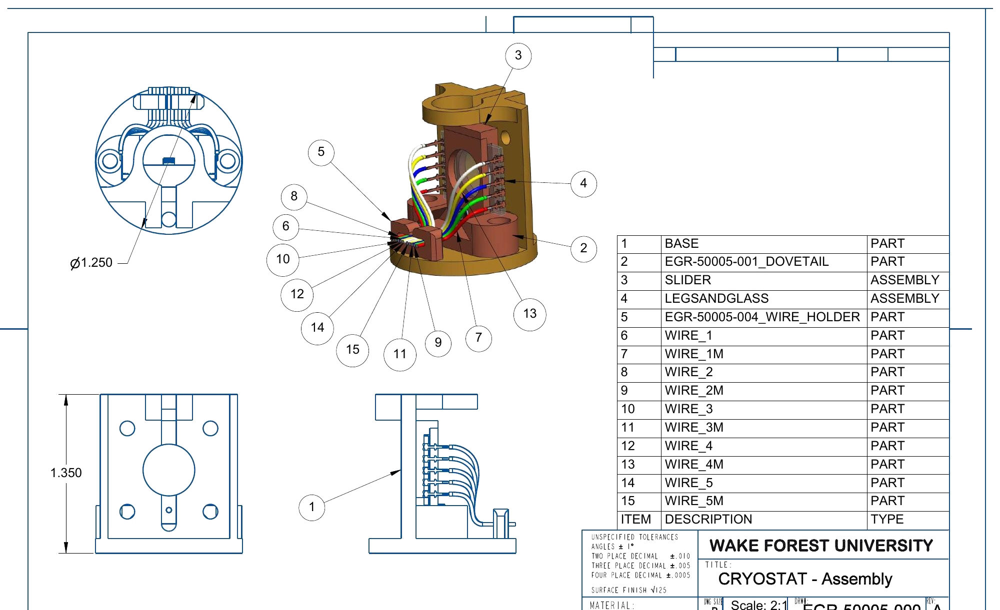

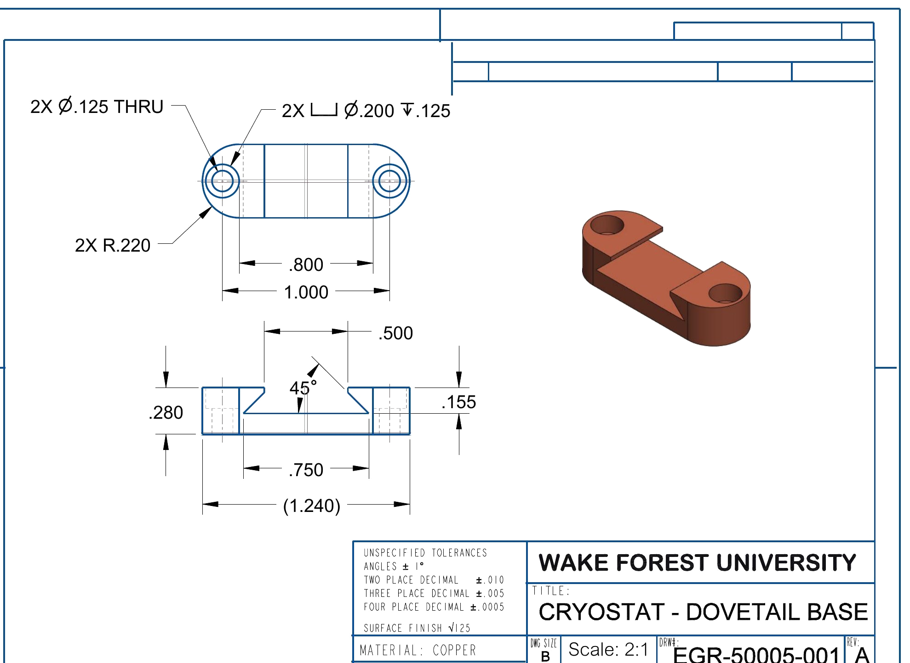

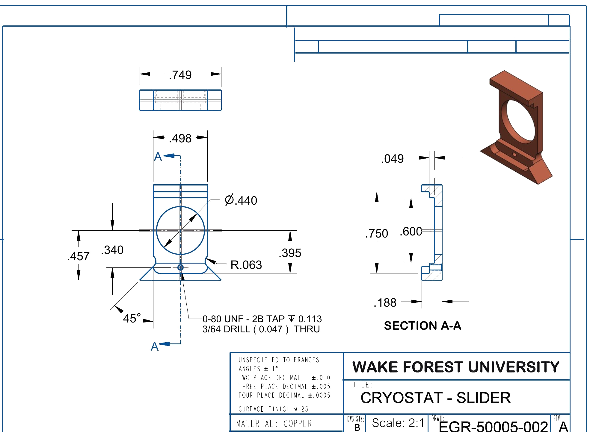

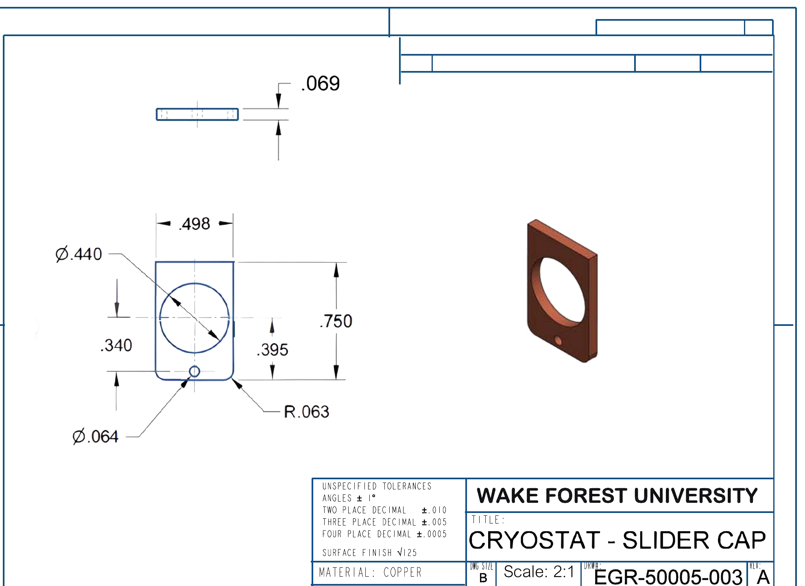

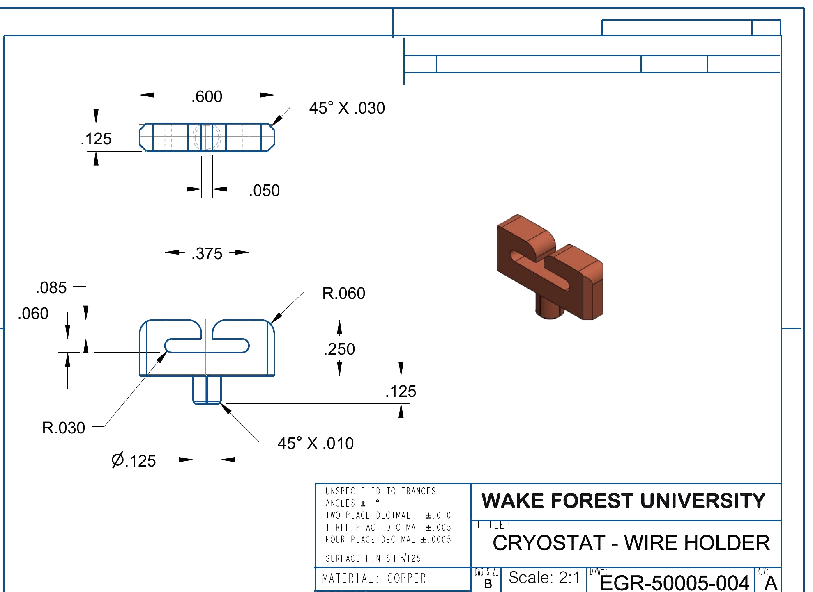